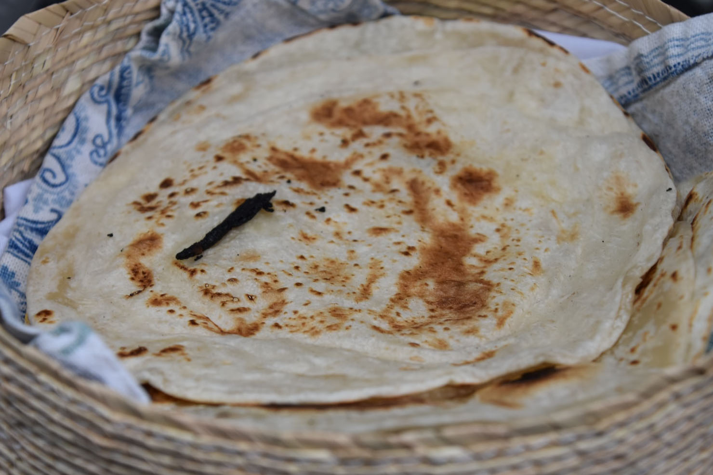
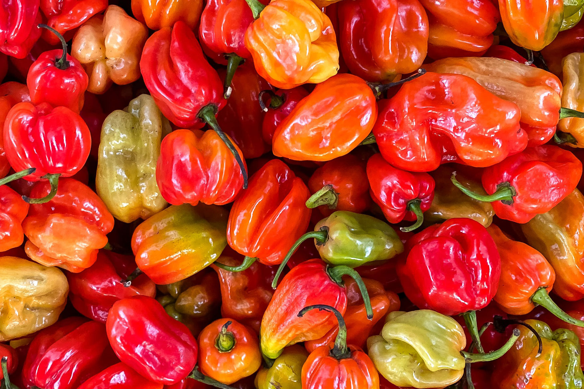
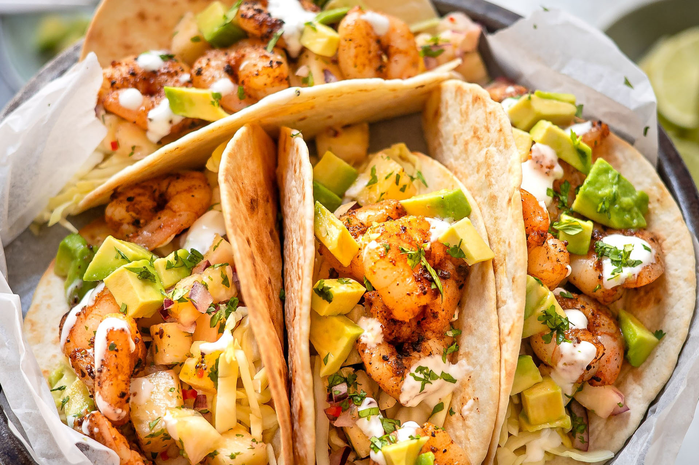

Qui sommes-nous?
Une tradition bien gardée
Installé dans le canton de Neuchâtel depuis le début des années 2000, notre restaurant familial El Taco del Pablo vous propose ses services de restaurations, et son ambiance joyeuse et chalereuse. Nos recettes de tacos sont transmises dans notre famille de générations en générations, afin de vous proposer des plats uniques.
Des produits frais
Nous travaillons étroitement avec les porducteurs locaux afin de vous fournir les meilleurs tacos possibles. Pour les produits non-diponible sur le sol helvétique, nous essayons de travailler au maximum avec des productueurs mexicains pour assurer une authenticité parfaite de nos tacos.
Une attention aux clients
Le bonheur de notre clientelle est notre priorité absolue. Nous nous assurons que nos plats soient à votre goût, peu importe la saison. Nos menus sont entièrements personnalisable à votre guise. Nous vous proposons également des menus à partager en famille à un tarif abordable pour tous.
